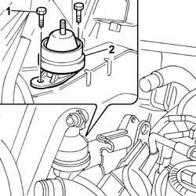
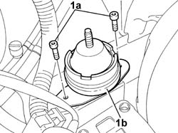

1008B10 POWER UNIT FRONT SUPPORT FLEXIBLE MOUNTING (TIMING SIDE) - REPLACE
- Path
- Procedures > 10 ENGINE > 1008 POWER UNIT SUPPORTS > 1008B POWER UNIT SUPPORT MOUNTINGS > 1008B10 POWER UNIT FRONT SUPPORT FLEXIBLE MOUNTING (TIMING SIDE) - REPLACE
- Kind
- repair procedure (removal / refitting; the operation number is the code)
- Applies to
- all engines; all production periods
- Interactive page
- https://sloeber94.github.io/elrnDB-fUlss/en/#/179006853
Applies to: engines: 2.0 16V JTD, 2.2 16V JTD; all production periods
 Removing
Removing
 Refitting
RefittingPosition the vehicle on a lift.
Raise the vehicle.
Op. 7055B54 UNDER ENGINE PROTECTION/GUARD - R.R.
Lower the vehicle.
Op. 1088B10 ENGINE COOLANT SUPPLY RESERVOIR - R.R.
Op. 1008C10 POWER UNIT UPPER SUPPORT - R R
Op. 1008A46 POWER UNIT RIGID SUPPORT - TIMING SIDE - R.R.
1. Undo the bolts securing the flexible engine mounting to the bodyshell.
2. Remove the flexible mounting from the engine compartment.

Applies to: engines: 2.0 16V JTD, 2.2 16V JTD; all production periods
Refitting
RemovingFit the flexible mounting in the housing in the engine compartment.
Tighten the bolts securing the engine block to the body to torque.
da Nm | Fastening | Component | dia |
|---|---|---|---|
3.0 | Bolt | BODY FLEXIBLE BLOCK | - |
Op. 1008A46 POWER UNIT RIGID SUPPORT - TIMING SIDE - R.R.
Op. 1008C10 POWER UNIT UPPER SUPPORT - R R
Op. 1088B10 ENGINE COOLANT SUPPLY RESERVOIR - R.R.
Op. 0010T21 ENGINE COOLANT - CHECK DENSITY AND CHANGE, IF NECESSARY
Raise the vehicle.
Op. 7055B54 UNDER ENGINE PROTECTION/GUARD - R.R.
Lower the vehicle.
Applies to: engines: 3.0 24V V6; all production periods
Removing
Refitting- Position the vehicle on the lift.
- Disconnect the negative battery terminal.
 | Description | Connector |
|---|---|---|
. | Battery |
1. Undo the retaining bolts (1a) and remove the timing side front flexible engine block (1b).

Applies to: engines: 3.0 24V V6; all production periods
Refitting
Removing- Fit the flexible mounting in position and tighten the fixing bolts to torque.
 | Value - daNm | Fastening | Component | Ø |
|---|---|---|---|---|
. | 3 | Bolt | FRONT FLEXIBLE MOUNTING BLOCKS, POWER UNIT |
- Connect the negative battery terminal.
| Description | Connector |
|---|---|---|
. | Battery |
- Remove the vehicle from the lift.
Applies to: engines: 2.0 16v; all production periods
Removing
RefittingSee descriptions
See descriptions
Op. 7055B54 UNDER ENGINE PROTECTION/GUARD - R.R.
See descriptions
- Undo the retaining bolts (1a) and remove the flexible mounting for the timing side front support (1b).
Applies to: engines: 2.0 16v; all production periods
Refitting
Removing- Fit the flexible mounting in position and tighten the fixing bolts to torque.
| Value - daNm | Fastening | Component | Ø |
|---|---|---|---|---|
. | 3 | Bolt | FRONT FLEXIBLE MOUNTING BLOCKS, POWER UNIT |
See descriptions
Op. 7055B54 UNDER ENGINE PROTECTION/GUARD - R.R.
See descriptions
See descriptions
Op. 0010T21 ENGINE COOLANT - CHECK DENSITY AND CHANGE, IF NECESSARY
Topics linked from this page (5)
- 0010T21 ENGINE COOLANT - CHECK DENSITY AND CHANGE, IF NECESSARY
- 1008A46 POWER UNIT RIGID SUPPORT - TIMING SIDE - R.R.
- 1008C10 POWER UNIT UPPER SUPPORT - R R
- 1088B10 ENGINE COOLING TANK - R + R
- 7055B54 UNDER-ENGINE GUARD - R R